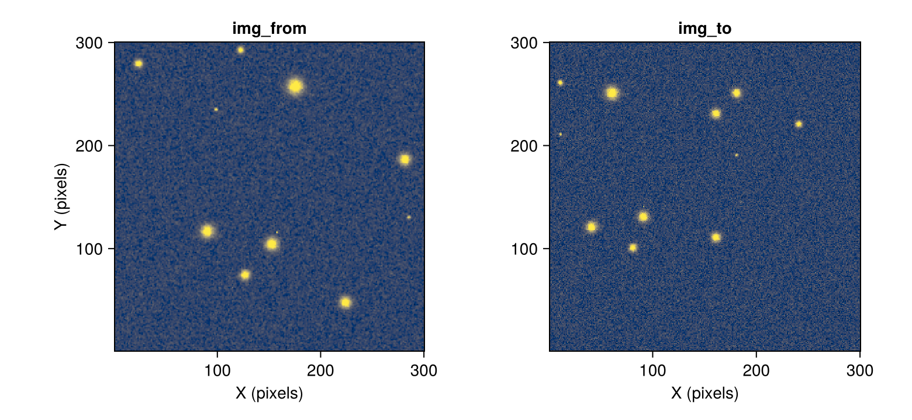
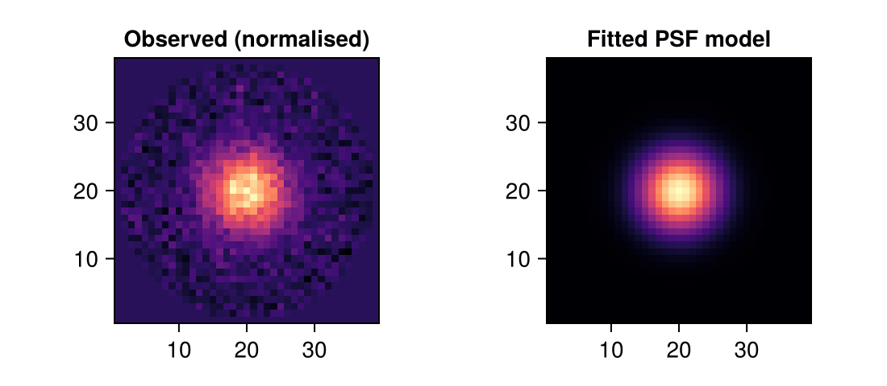
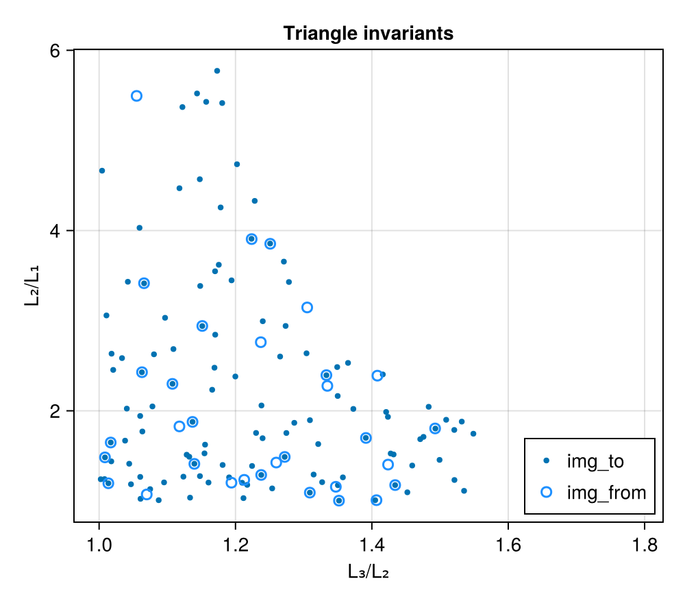
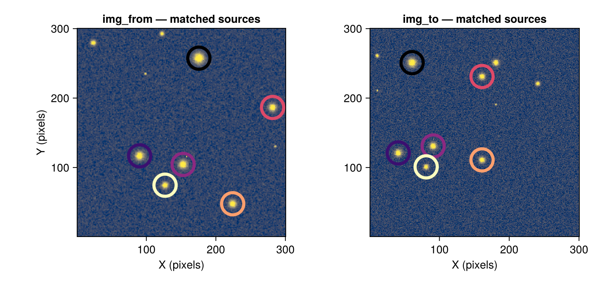
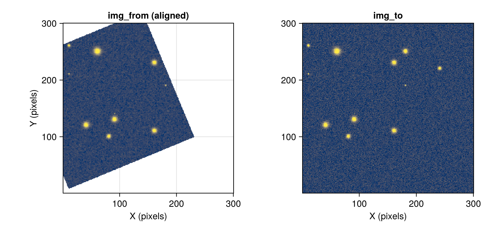

Aligning Astronomical Images
Credit: Beroiz, M., Cabral, J. B., & Sanchez, B. (2020)
Motivation
Aligning images comes up a lot in astronomy, like for co-adding exposures or timeseries photometry. The problem is that it can be computationally expensive to accomplish this via the traditional plate solving approach where we first need to calculate the WCS coordinates in each frame via a routine like astrometry.net, and then perform the relevant coordinate transformations from there.
Enter astroalign.py. This neat Python package sidesteps all of this by directly matching common star patterns between images to build a point-to-point correspondence. This page outlines the Julia reimplementation packaged as JuliaAstro/Astroalign.jl.
Usage
Here is a brief usage example aligning img_from onto img_to. In this example, img_from is img_to scaled by a factor of 0.8, rotated counter-clockwise by 22.5°, and translated by [10, 7] pixels.
arr_from_aligned, params_aligned = align_frame(img_from, img_to; scale = true)Plotting the input pair and the aligned result:
plot_pair(img_from, img_to; titles = ["img_from", "img_to"])
plot_pair(AstroImage(arr_from_aligned), img_to; titles = ["img_from (aligned)", "img_to"])That's it! The rest of this page walks through how this works behind the scenes and illustrates some knobs you can turn.
Recovered transformation
The transformation object tfm returned by align_frame defines the mapping img_from => img_to:
tfm_aligned = params_aligned.tfmAffineMap([0.7391794416675389 -0.3061623186192738; 0.30616231861927384 0.7391794416675389], [9.983330495694247, 6.9923186064678475])Decomposing it into scale (S), rotation (R), and translation (T) components:
S, R, T = decompose_tfm(tfm_aligned)
params_tfm = (scale = S[1], rot = atan(R[2, 1], R[1, 1]), trans = T)
println("Scale : $(round(params_tfm.scale; digits=4)) (truth: $SCALE_0, error: $(p_diff(params_tfm.scale, SCALE_0))%)")
println("Rotation : $(round(rad2deg(params_tfm.rot); digits=3))° (truth: $(round(rad2deg(ROT_0); digits=1))°)")
println("Translation : $(round.(params_tfm.trans; digits=2)) (truth: $TRANS_0, error: $(p_diff(params_tfm.trans, Float64.(TRANS_0)))%)")Scale : 0.8001 (truth: 0.8, error: 0.01%)
Rotation : 22.499° (truth: 22.5°)
Translation : [9.98, 6.99] (truth: [10, 7], error: 0.15%)Taking a look at our RANSAC pass, these final transformation values were determined from 10 out of 35 detected correspondences (28.6 %).
n_inliers = length(params_aligned.inlier_idxs)
n_total = size(params_aligned.correspondences, 4)
println("RANSAC inliers: $n_inliers / $n_total ($(round(100n_inliers/n_total; digits=1))%)")RANSAC inliers: 10 / 35 (28.6%)How It Works
Beroiz, Cabral, & Sanchez use the fact that triangles can be uniquely characterised to match sets of three stars (asterisms) between images. This point-to-point correspondence then gives everything needed to compute the affine transformation.
For this implementation they use the invariant $\mathscr M$ (the pair of two independent ratios of a triangle's side lengths, $L_i$) to define this unique characterisation:
\[\begin{align} &\mathscr M = (L_3/L_2,\ L_2/L_1), \\ &\text{where}\ L_3 > L_2 > L_1\;. \end{align}\]
Astroalign.jl accomplishes this in the following steps:
- Identify the
N_maxbrightest point-like sources inimg_fromandimg_to. - Calculate all triangular asterisms formed from these sources.
- Build a
2 × 3 × 2 × Narray of candidate triangle-level correspondences by matching each from-triangle to its nearest to-triangle in the invariant $\mathscr M$ space. Vertices are assigned via a canonical ordering that is invariant under rotation, so the positional correspondence between matched triangles is geometrically consistent. - Run RANSAC (Fischler & Bolles, 1981) on the triangle matches to robustly identify the largest set of mutually consistent correspondences ("inliers").
- Refine the transformation via the Kabsch/Umeyama least-squares algorithm applied to all vertex pairs from all inlier triangle matches.
- Warp
img_fromto the coordinates ofimg_to.
Details
The following sections walk through each step in detail using the same star fields shown in the Usage example above.
Step 1: Identify control points
Source extraction
astroalign.py uses sep under the hood for its source extraction. We use Photometry.extract_sources to pull out the regions around the brightest pixels and PSFModels.fit to fit PSF models to each detected source, allowing us to pick out the ones that look like stars (vs. hot pixels, artifacts, etc.). In the future additional photometry options may be added. This process is executed by the Astroalign.get_sources function.
sources_to, subt_to, _ = get_sources(img_to)([(x = 232, y = 161, value = 32900.6254939205), (x = 211, y = 11, value = 32730.599989841456), (x = 101, y = 82, value = 32461.33699806252), (x = 251, y = 61, value = 32258.940285642646), (x = 111, y = 161, value = 32144.994738026708), (x = 120, y = 40, value = 32123.72803973405), (x = 132, y = 91, value = 31958.694224143386), (x = 221, y = 241, value = 31322.157358645025), (x = 261, y = 11, value = 31129.62592109082), (x = 250, y = 181, value = 28627.510831911794)], [-2417.1268844221086 -0.1268844221085601 … -784.2363977485948 881.7636022514052; 4694.873115577891 -3110.1268844221086 … 2162.7636022514052 -50.236397748594754; … ; -1305.2397660818751 718.7602339181249 … -437.7011331444737 271.2988668555263; -1473.2397660818751 -640.2397660818751 … 488.2988668555263 -3136.7011331444737], [23966.12688442211 23966.12688442211 … 24115.236397748595 24115.236397748595; 23966.12688442211 23966.12688442211 … 24115.236397748595 24115.236397748595; … ; 23939.239766081875 23939.239766081875 … 23677.701133144474 23677.701133144474; 23939.239766081875 23939.239766081875 … 23677.701133144474 23677.701133144474])Source characterisation
Photometry.photometry automatically computes aperture sums and returns them in a nice table for us. We also pass a function, Astroalign.PSF, to compute some PSF statistics for each source and stores them in the table as well.
box_size = Astroalign._compute_box_size(img_to)
ap_radius = 0.6 * first(box_size)
aps_to = CircularAperture.(sources_to.y, sources_to.x, ap_radius)
phot_to = let
phot = photometry(aps_to, subt_to; f = Astroalign.PSF())
Astroalign.to_subpixel(phot, aps_to)
end
sort!(phot_to; by = x -> hypot(x.aperture_f.psf_params.fwhm...), rev = true)
phot_toTable with 4 columns and 10 rows:
xcenter ycenter aperture_sum aperture_f
┌───────────────────────────────────────────────────────────────────────────
1 │ 60.8968 251.057 3.2353e6 (psf_params = (x = 19.8968, y = 20.0574, …
2 │ 91.0245 131.005 2.35498e6 (psf_params = (x = 20.0245, y = 19.005, f…
3 │ 41.0208 121.03 2.14729e6 (psf_params = (x = 21.0208, y = 21.0296, …
4 │ 180.939 251.044 1.411e6 (psf_params = (x = 19.939, y = 21.044, fw…
5 │ 161.041 110.99 1.40746e6 (psf_params = (x = 20.0412, y = 19.9898, …
6 │ 161.038 231.054 1.4279e6 (psf_params = (x = 20.0382, y = 19.0537, …
7 │ 81.0058 100.961 1.26051e6 (psf_params = (x = 19.0058, y = 19.9614, …
8 │ 240.967 220.95 7.70584e5 (psf_params = (x = 19.9669, y = 19.9495, …
9 │ 10.9542 251.55 5.63069e5 (psf_params = (x = 19.9542, y = 10.5504, …
10 │ 10.7102 202.019 1.97722e5 (psf_params = (x = 19.7102, y = 11.0186, …In addition to the usual Photometry.photometry fields returned, the aperture_f field contains a named tuple of PSF information computed by default with the Astroalign.PSF() callable:
psf_params: Named tuple ofxandycenter, andfwhmof fitted PSF relative to its aperture.psf_model: The best fit PSF model. Uses agaussianby default.psf_data: The underlying intersection array of the data within the aperture being fit.
The same parameters passed to Photometry.fit can also be passed to Astroalign.PSF().
Below is a quick visual check comparing an observed point source with its fitted PSF model (source 1):
let
psf_data = phot_to[1].aperture_f.psf_data
psf_model = phot_to[1].aperture_f.psf_model
model_arr = psf_model.(CartesianIndices(psf_data))
fig = Figure(size = (550, 240))
ax1 = Axis(fig[1, 1]; title = "Observed (normalised)", aspect = DataAspect())
ax2 = Axis(fig[1, 2]; title = "Fitted PSF model", aspect = DataAspect())
n1, n2 = size(psf_data)
heatmap!(ax1, 1:n1, 1:n2, psf_data'; colormap = :magma)
heatmap!(ax2, 1:n1, 1:n2, model_arr'; colormap = :magma)
fig
end
PSF centers are relative to the aperture, while xcenter and ycenter are relative to the whole image. Astroalign.jl performs the necessary conversions from the former to the latter in Astroalign.to_subpixel before reporting the final fitted values.
Step 2: Calculate invariants
This is done internally in align_frame, but the invariants $\mathscr M_i$ can also be exposed with triangle_invariants. Below is a plot comparing the compents of the computed invariants for all control points in our from and to images. Overlapping regions between the from and to clouds indicate similar triangles found by Astroalign.jl. Compare to Fig. 1 in Beroiz et al. (2020).
C_to, ℳ_to = triangle_invariants(phot_to)
# Obtain from-image invariants from the cached params returned by align_frame
(; C_from, ℳ_from) = params_aligned
fig = Figure(size = (500, 440))
ax = Axis(fig[1, 1]; xlabel = "L₃/L₂", ylabel = "L₂/L₁",
title = "Triangle invariants")
scatter!(ax, ℳ_to[1, :], ℳ_to[2, :]; label = "img_to", markersize = 6)
scatter!(ax, ℳ_from[1, :], ℳ_from[2, :]; label = "img_from",
marker = :circle, markersize = 10, strokecolor = :dodgerblue,
strokewidth = 1.5, color = (:dodgerblue, 0))
axislegend(ax; position = :rb)
fig
The number of triangle combinations may differ between frames if sources drift towards or off the edge of the frame between images. All that is needed is one matching triangle.
Step 3: Build candidate correspondences
We next build our list of candidate correspondences in this invariant space via a nearest neighbors search.
correspondences = Astroalign._build_correspondences(C_from, ℳ_from, C_to, ℳ_to)
println("Candidate triangle matches: $(size(correspondences, 4))")Candidate triangle matches: 35Step 4: RANSAC pass
The largest mutually consistent set of correspondences ("inliers") is found via a RANSAC pass using JuliaAstro/ConsensusFitting.jl:
fwd_tfm_initial, inlier_idxs_initial = step4(correspondences;
scale = true, ransac_threshold = 3.0)
println("Initial RANSAC inliers: $(length(inlier_idxs_initial)) / $(size(correspondences, 4))")Initial RANSAC inliers: 20 / 35Step 5: Refine transformation
The transformation and inlier set from the previous step are successively refined using all detected control points, capturing previously missed inliers while dropping incorrect assignments:
point_map, tfm = step_5(correspondences, fwd_tfm_initial, inlier_idxs_initial;
scale = true, ransac_threshold = 3.0)
println("Final matched control-point pairs: $(length(point_map))")Final matched control-point pairs: 6The matched control points in both images are shown below:
let
pts_from = reduce(hcat, [p.first for p in point_map])'
pts_to = reduce(hcat, [p.second for p in point_map])'
_colors = [cgrad(:magma)[z] for z in range(0, 1, length = size(pts_from, 1))]
fig = Figure(size = (780, 360))
ax_l = Axis(fig[1, 1]; title = "img_from — matched sources",
xlabel = "X (pixels)", ylabel = "Y (pixels)", aspect = DataAspect())
ax_r = Axis(fig[1, 2]; title = "img_to — matched sources",
xlabel = "X (pixels)", aspect = DataAspect())
show_image!(ax_l, img_from')
show_image!(ax_r, img_to')
scatter!(ax_l, pts_from[:, 1], pts_from[:, 2];
# scatter!(ax_l, pts_from[1, :], pts_from[2, :];
strokecolor = _colors,
color = :transparent, markersize = 40, strokewidth = 4)
scatter!(ax_r, pts_to[:, 1], pts_to[:, 2];
# scatter!(ax_r, pts_to[1, :], pts_to[2, :];
strokecolor = _colors,
color = :transparent, markersize = 40, strokewidth = 4)
fig
end
Step 6: Apply transformation
Once the linear transformation parameters have been finalized in step 5, we hand it off to ImageTransformations.jl to perform resampling to align img_from with img_to:
img_aligned_from = AstroImage(warp(img_from, tfm, axes(img_to)))
plot_pair(img_aligned_from, img_to; titles = ["img_from (aligned)", "img_to"])
This should match the result returned by align_frame in the Usage section above.